扉页

版权页
京权图字：01-2002-6590
Originally published by Oxford University Press, Great Clarendon Street, Oxford. © 2002
This edition is licensed for sale in the People's Republic of China only and not for export therefrom.
'Oxford' is a registered trademark of Oxford University Press.
只限中华人民共和国境内销售，不包括香港特别行政区、澳门特别行政区及台湾省。不得出口。
图书在版编目（CIP）数据
莫尔格街凶杀案＝The Murders in the Rue Morgue／（美）爱伦·坡（Poe, E. A.）著；（英）巴西特（Bassett, J.）改写；刘姗姗译．—北京：外语教学与研究出版社，2003.6（2014.12 重印）
（书虫·牛津英汉双语读物）
ISBN 978-7-5600-3615-1
Ⅰ．莫… Ⅱ．①爱…②巴…③刘… Ⅲ．英语—对照读物，小说—英、汉 Ⅳ．H319.4：I
中国版本图书馆CIP数据核字（2003）第065548号
出版人： 蔡剑峰
责任编辑：易 璐
出版发行：外语教学与研究出版社
社 址：北京市西三环北路19号 （100089）
网 址：http://www.fltrp.com
版 次：2003年9月第1版
书 号：ISBN 978-7-5600-3615-1
* * *
凡侵权、盗版书籍线索，请联系我社法律事务部
举报电话：（010）88817519 电子邮箱：banquan@fltrp.com
法律顾问：立方律师事务所 刘旭东律师
中咨律师事务所 殷 斌律师
内容简介
内容简介
世界书林中不乏著名的侦探——洛杉矶的菲利普·马洛、芝加哥的维克·沃肖斯基、牛津的莫尔斯巡官，当然，还有来自伦敦的神奇的舍洛克·福尔摩斯。然而出现在所有这些名探之前的是巴黎的奥古斯特·杜邦先生。
他并非警官，也不是一个真正的侦探。他是一个性格温和酷爱书籍和阅读的年轻人。但是他聪明至极，理解能力高人一等。他对莫尔格街发生的可怕的凶杀案产生了浓厚的兴趣，因为它是一个未解之谜。是谁杀害了老太太和她的女儿？这场凶杀案为何如此粗暴凶残？凶手又是如何逃出房子的？有众多谜团——却没有谜底。
“诀窍，”奥古斯特·杜邦说，“在于问恰当的问题。然后就可以找到谜底……”
THE MURDERS IN THE RUE MORGUE
THE MURDERS
IN THE RUE MORGUE
There are many famous detectives in the world of books—Philip Marlowe in Los Angeles, Vic Warshawski in Chicago, Inspector Morse in Oxford, and of course, the great Sherlock Holmes in London. But before any of these, there was Monsieur Auguste Dupin in Paris.
He was not a policeman, and not really a detective either. He was a quiet young man, who loved books and reading. But he was clever, and he could understand many things that other people did not. He took a close interest in the horrible murders in the Rue Morgue, because there were no answers to the mystery. Who murdered the old lady and her daughter? Why were the murders so brutal? How did the murderer get out of the house? So many questions—and no answers.
'The secret,' said Auguste Dupin, 'is to ask the right questions. Then you will find the answers...'
目录
1 My friend Auguste Dupin
1
My friend Auguste Dupin
I met Monsieur Auguste Dupin while I was living in Paris during the spring and summer of 1839. This young Frenchman was from an old and famous family, but the family was now very poor and Dupin only had a little money to live on. He ate and drank very little, bought no clothes, and lived very quietly. Books were the love of his life, and in Paris it is easy to get books.
Our first meeting was in a small bookshop in the Rue Montmartre. We were looking for the same old book, and that is how our conversation began. We met again and again, and were soon very friendly.
He knew much more about books than I did. Conversation with a man like him was very helpful for my studies, and after a time we agreed to find a house and live there together for the time of my stay in Paris.
We found a house in a quiet street in the Faubourg St. Germain. It was a very old house, and was neither beautiful nor comfortable. But it was right for us, and our strange way of life.
We saw no visitors, had no friends, and lived only for the night. When morning came, we closed all the shutters on our windows, and in this half-light we spent the day reading, writing, or talking, until the true darkness came. Then we went out into the streets, and walked for hours among the wild lights and shadows of the crowded city.
During these night walks I learnt how clever my friend was. He could think so clearly and understood so much! He could read other people's thoughts as easily as writing on a wall. He often said, with a laugh, that people had windows in their faces and that he could see through them. Sometimes he read my thoughts in ways that surprised me very much.
One night we were walking down a long street near the Jardin du Luxembourg. We were both thinking, and for fifteen minutes we did not say a word. Then, suddenly, Dupin said:
'He cannot write tragedy, that's true. He's much better at writing his funny pieces for the newspaper.'
'Oh yes, I agree with that. He—' Then I stopped, astonished. 'Dupin,' I said, 'I do not understand. How could you possibly know that I was thinking about—?' Again, I stopped. Did Dupin really know who I was thinking about?
'About Chantilly,' Dupin said. 'You were saying to yourself that he was a good writer, but he cannot write tragedy.'
'Yes, that's true,' I said. 'I was thinking that. But tell me, please! How did you know?'
This Chantilly wrote for one of the Paris newspapers. He wrote about Paris and Parisians in a way that was both clever and very funny. But then he wrote a book, a long story about the ancient Greeks, and Phaedra, the wife of King Theseus. It was, everybody in Paris agreed, a very bad book.
'It was the apple-seller,' replied my friend. 'The apple-seller began the thoughts that took you to Chantilly and his book.'
'The apple-seller!' I said, astonished. 'But I don't know any apple-sellers.'
My friend was happy to explain. 'Some minutes ago we passed an apple-seller, who was carrying a big box of apples on his head, taking them to the fruit market. He didn't see you, and you had to jump out of his way. There were holes in the street, and you turned your foot in one of these holes and nearly fell.'
I remembered this now, but how did the apple-seller take us to Chantilly?
'You looked around.' my friend went on, 'and saw all the other holes and broken stones in the street, and then you looked up, a little angrily, to see the name of the street. You were thinking, I am sure, that it was a dangerous street to walk down in the dark, when you could not easily see the holes.
'Then we turned a corner into the Rue Racine. Here, the stones were new and unbroken, and you looked up, pleased, to find the name of this street. This name began a new thought. You smiled a little and shook your head. The famous Racine, who wrote a play about Phaedra in 1677, was a better writer than Chantilly will ever be. And you remembered that when Chantilly's book first came out, the bookshops called Chantilly "the new Racine". Everybody in Paris laughed at poor Chantilly because of that. I was sure that you were thinking of that when you smiled. And when you shook your head, I knew you were thinking of poor Chantilly's book.'
conversation n. informal talk. 交谈，谈天。
again and again repeatedly. 反复地，屡次地；一再地，再三地。
friendly adj. acting like a friend. 朋友般的；友爱的。
shutter n. movable panel or screen that can be closed over a window to keep out light or thieves. 活动的窗板或窗帘，百叶窗，遮板。
wild adj. out of control; undisciplined. 失去控制的；不守规矩的。
astonished adj. very surprised. 感到惊讶的；吃惊的。
look around to search. 到处寻找。
broken adj. (of land) having an uneven surface; rough.（指地面）凹凸不平的，多岩石的地面。
laugh at mock or ridicule sb./sth. 取笑或讥笑某人或某物。
我的朋友奥古斯特·杜邦
1．我的朋友奥古斯特·杜邦
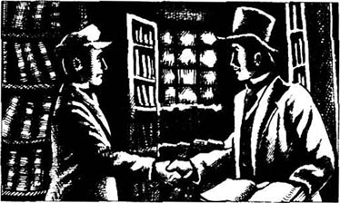
我是1839年的春天和夏天住在巴黎时认识奥古斯特·杜邦先生的。这个法国年轻人出身于一个古老的名门望族，可是如今家道已经衰落，杜邦只能依靠着一点点钱勉强维持生计。他吃的喝的都很少，也不买衣服，过着非常平静的生活。书籍是他的生活所爱，而且在巴黎是很容易得到书的。
我们第一次相遇是在蒙马特尔大街的一家小书店里。我们都在找同一本旧书，于是便开始攀谈起来。后来我们又见过很多次面，很快成为了朋友。
他读过的书要比我读过的多得多。和这样的人交谈对我的学习大有裨益，后来我们决定找一所房子，在我待在巴黎的这段时间里合住在一起。
我们在圣日尔曼区一条僻静的街道上找到了一所房子，非常古老，既不漂亮也不舒适，但是却很适合我们，适合我们独特的生活方式。
我们不见客人，也没有什么朋友，只为夜晚而活着。白天我们关上所有窗户上的窗板，就在这半明半暗的屋子里读书、写作，或者聊天，直到真正的黑暗来临。然后我们就会到街上去，在拥挤的城市、纷乱的灯光和阴影中散步几个小时。
就是在夜晚散步的这些时间里，我发现了我的朋友是多么聪明。他的思路是如此清晰，理解是如此深刻！他能轻而易举地读懂别人的心思，就像在墙上写字一样容易。他经常笑着说人们脸上都有窗户，他可以透过这些窗户看见人们的内心世界。有时候他洞穿我的心思的方法会让我大吃一惊。
一天晚上我们正沿着卢森堡公园附近一条长长的街道散步。我们各自想着心事，15分钟内谁也没有言语。突然，杜邦说道：
“的确，他写不了悲剧。他更擅长给报纸写那些幽默搞笑的东西。”
“哦，对，我同意。他——”我没说下去，惊讶万分。“杜邦，”我说，“我不明白。你怎么能知道我在想什么——？”我又一次打住了。杜邦真的知道我在想谁吗？
“在想尚蒂伊，”杜邦说，“你在心里说他是个好作家，但是他写不了悲剧。”
“对，是的，”我说，“我的确是在想这些。但是请告诉我！你是如何知道的？”
这个尚蒂伊为巴黎的一份报纸撰写文章。他以一种睿智而又极其幽默的笔触描写巴黎和巴黎人。但后来他写了一本书，一个关于古希腊人和国王铁修斯的妻子费德拉的长篇故事。巴黎人都觉得这本书实在是糟糕至极。
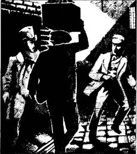
“是因为那个卖苹果的商贩，”我的朋友回答道，“是卖苹果的商贩让你逐步想到了尚蒂伊和他的书。”
“卖苹果的商贩！”我吃惊地说，“可是卖苹果的商贩我一个都不认识啊。”
我的朋友很乐意解释。“几分钟前我们和一个卖苹果的商贩擦身而过，他头上顶着一大箱苹果要运往果市。他没看见你，所以你只得跳开给他让路。街道上坑坑洼洼，你的脚正好踩在了一个坑里，险些跌倒。”
现在我想起来了，可是这个卖苹果的商贩又怎么会让我们想到尚蒂伊呢？
“你四处看了看，”我的朋友接着说，“看见了其他坑洼和街上的碎石，然后有些生气地抬起头，去看街道的名字。”你肯定在想，摸黑走这条街实在不安全，因为不容易看清地上的坑。
“然后我们拐了一个弯到了拉辛大街。这儿的石路是刚铺的，没有什么坑洼，你欣慰地抬起头，去看这条街道的名字。这个名字让你想到了别的什么。你笑了一下，摇了摇头。德高望重的拉辛在1677年也曾写过一部关于费德拉的戏剧，他的成就是尚蒂伊永远难以企及的。你想到了在尚蒂伊的书首次面世的时候，书店都把他称为‘小拉辛’。所有的巴黎人都为此讥笑可怜的尚蒂伊。你刚才肯定是想到了这个才笑了起来。而当你摇头的时候，我就知道你一定是想起了可怜的尚蒂伊的书。”
2 The murders
2
The murders
Not long after that night, we were looking through the Gazette, an evening newspaper, when we saw this:
TERRIBLE MURDERS
At about three o'clock this morning people living in the St. Roch Quarter were woken from sleep by a number of terrible screams. The screams came from the fourth floor of a house in the Rue Morgue, which belongs to a Madame L'Espanaye, and her daughter, Mademoiselle Camille L'Espanaye.
Eight or ten of the neighbours, and two policemen, ran to the house. There was no answer to their knocking, so they broke down the door. When they got into the house, the screams stopped, but while they were running up the stairs, they could hear two angry voices at the top of the house. When they arrived at the second floor, the voices stopped and everything was silent. The neighbours hurried from room to room but found nothing until they came to a large room at the back of the house on the fourth floor. This room was locked, with the key on the inside. They broke the door open and saw in the room something which was both horrible and astonishing.
Chairs and tables were broken and lay in pieces everywhere. There was one bed, and the mattress from it was now on the floor in the middle of the room. In front of the fireplace on the floor was a razor, with blood on it, and some long grey hair, with blood on the end. Also on the floor were three large silver spoons, and two bags, which contained nearly four thousand francs in gold. A small strong-box was found under the mattress. It was open, with the key in the lock, and contained only a few old letters.
At first they thought there was nobody in the room, but when they looked up the chimney, they found (horrible to describe!) the dead body of the daughter, head downwards. It was difficult to pull the body out because the chimney was so narrow. The body was still warm. There were deep cuts on the face, and around the neck there were dark bruises and the marks of fingers.
The neighbours looked in all the other rooms, then went down into the small yard at the back of the house. There they found the dead body of Madame L'Espanaye. Her neck was very deeply cut, and when they tried to lift her, the head fell off. There were terrible bruises all over the body.
At the moment, the police say, there are no answers to this horrible mystery.
look through sth. examine or read sth. quickly. 快速检查某事物，快速阅读某物。
scream n. loud shrill piercing cry or noise. 高而尖的声音。
break (sth.) down make sth. collapse by striking it hard. 猛击某物使之毁坏，破门而入。
at the back of... 在……的后部。
mattress n. fabric case filled with soft or springy material (e.g. wool, hair, feathers, foam rubber, etc.) and used for sleeping on. 床垫。
fireplace n. open space for a fire in a room, usu. made of brick or stone and set into a wall. 壁炉。
razor n. instrument with a sharp blade, used for shaving hair from the shin. 剃刀，刮脸刀。
strong-box n. sturdy box for keeping valuable things in. 保险箱，保险柜。
bruise n. injury caused by a blow to the body or to a fruit, discoloring the skin but not breaking it. 挫伤，瘀伤。
凶杀案
2．凶杀案
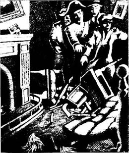
那天晚上之后不久，我们阅读一份叫《新闻传播》的晚报时看到了这样一则新闻：
恐怖的凶杀案
今早，大约凌晨3点钟时，居住在圣·罗奇地区的人们被一阵凄厉的尖叫声惊醒了。尖叫声是从位于莫尔格街的一所房子的五楼传来的，这所房子的主人是一位名叫埃斯巴耐的夫人以及她的女儿，卡米耶·埃斯巴耐小姐。
八个或是十个邻居和两名警察立即赶到了那所房子。他们敲门，却没人应答，于是他们把门强行撞开。在他们进入房子时，尖叫声停止了，可是就在他们跑上楼的时候，他们听见了房顶上传来的两个愤怒的声音。跑到三楼时，声音消失了，一切都安静了下来。邻居们从一个房间冲向另一个房间，却一无所获，直到来到五楼房子后部的一个大房间。房门被锁住了，并且是从里面反锁着。撞开门后，他们看到了房间里令人震惊而可怕的一幕。
桌椅全部被弄坏了，并且七零八落散得满地都是。房间里有一张床，床垫被扔到了屋中间的地板上。壁炉前的地板上有一把带血的剃刀，还有几撮发根带血的灰色长发。另外，地板上还有三把大银勺，两只装有价值将近4,000法郎黄金的袋子。在床垫底下还发现了一个小小的保险箱。箱子敞开着，钥匙插在锁孔里，里面只有一些已经读过的信。
起初他们还以为房间里没有人，可是当他们从烟囱里向上瞧时，竟然发现了（简直是惨不忍睹！）老太太女儿的尸体，尸体头朝下。由于烟囱过于窄小，尸体好不容易才被拽了出来。尸体尚带余温，脸上有很深的伤口，颈部有黑紫色淤青和手指的掐痕。
在查看了其他所有房间后，邻居们来到房子后面的一个小院子。在那里他们发现了埃斯巴耐夫人的尸体。她的脖子几乎被切断，在被抬走时，尸体的头掉了下来，而且尸体全身满是可怕的伤痕。
警方说目前还无法破解这桩令人发指的迷案。
3 What the witnesses said
3
What the witnesses said
Dupin said nothing about these horrible murders that evening, but I knew he was interested, because the next day he opened the morning newspaper at once. There was a lot more about the mystery.
THE TRAGEDY IN THE RUE MORGUE
The police have talked to many people about this terrible tragedy. This is what witnesses have said, but nothing so far can explain the mystery in any way.
Pauline Dubourg, washerwoman
'I've known Madame and her daughter for three years. I do their washing for them and they pay very well. People say that the old lady was rich, but I don't know about that. I never saw anybody in the house when I went to get the washing or to take it back. I think they lived only on the fourth floor of the house.'
Pierre Moreau, shopkeeper
'I have lived all my life in this quarter. The house in the Rue Morgue belongs to Madame L'Espanaye, and she and her daughter have lived there for six years. Madame sometimes came into my shop, but I didn't see the daughter very often. The two of them lived very quietly. In six years I never saw anybody go into their house except the postman and the doctor.'
Many other neighbours said the same thing. There were no visitors to the house, either friends or family. The shutters of the windows, front and back, were nearly always closed, except for the large back room on the fourth floor.
Isodore Muset, policeman
'I was called to the house in the Rue Morgue at about three o'clock in the morning, and found twenty or thirty people at the front door. The screams from a person or people inside the house were very loud, but they stopped suddenly when we broke the front door down. I was the first up the stairs and when I reached the first floor, I could hear two angry voices, arguing loudly. One was a deep voice, the other high and shrill—a very strange voice. The deep voice was that of a Frenchman. I'm sure it wasn't a woman s voice. I could hear the words "diable" and "Mon Dieu". The shrill voice was a foreigner, perhaps a man or perhaps a woman. I couldn't hear any words, but the language was Spanish, I think.'
Henri Duval, a neighbour
'I agree with what Isodore Muset has said, except about the voices. The shrill voice was speaking in Italian—I'm sure it wasn't French. No, I don't know Italian myself, but I'm sure it sounded like Italian words. I knew Madame L. and her daughter, and it certainly wasn't either of their voices.'
Jan Odenheimer, kitchen worker
'I was walking past the house when I heard those long, terrible screams, and I was one of the people who went into the building and heard the voices on the stairs. I am from Holland and don't speak French, but I'm sure the shrill voice was a man's voice—a Frenchman. I couldn't hear the words but the voice sounded angry and afraid. The deep voice said the word "diable" many times.'
Jules Mignaud, banker, Mignaud & Son
'Madame L'Espanaye opened an account at my bank eight years ago. She did not often take money out of her account, but three days before her death she took out four thousand francs. This money was paid in gold, and a clerk took it to her house in the Rue Morgue.'
Adolphe Le Bon, bank clerk at Mignaud & Son
'On Monday, at about 12 o'clock, I went with Madame L'Espanaye to her home, carrying the four thousand francs in two bags. When Mademoiselle L'Espanaye opened the front door, she took one of the bags, and then Madame took the other bag. I said goodbye and left. There was nobody in the street at that time.
William Bird, musician
'I'm an Englishman and I've lived in Paris for two years. I went into the house with the others and heard the voices on the stairs. The deep voice was that of a Frenchman—I remember hearing the words "Mon Dieu". I also heard a sound like people fighting. The shrill voice was very loud—louder than the deep one. It wasn't an Englishman's voice. I think it was a German, possibly a woman. No, I don't understand German.'
Several witnesses said that the door of the room on the fourth floor was locked, with the key on the inside. Everything was silent when they got up there, and when they broke the door open, they saw nobody in the room. The two windows were closed and fastened on the inside. The police have looked through the house very carefully—every room, every chimney, every corner—but they have found nothing. The witnesses do not agree about the time between hearing the voices and breaking open the door—some say it was three minutes, others say five minutes.
Alfonzo Garcia, cook
'I live in the Rue Morgue, but I come from Spain. I was too afraid to go upstairs, but I heard the voices arguing. The deep voice spoke in French, and the shrill voice was that of an Englishman. Yes, I'm sure. No, I can't speak English, but I know what it sounds like.'
Alberto Montani, fruit-seller
'I was one of the first up the stairs, and heard the voices—a Frenchman with a deep voice, saying something angry, and a shrill voice, which spoke quickly and unclearly. I think it was the voice of a Russian. Yes, I'm Italian. I've never spoken to a Russian person.'
Paul Dumas, doctor
'I was called to see the bodies at daybreak. Both of them were then lying in the room on the fourth floor. The young lady's body was bruised and cut all over when it was pushed up the chimney. The face was blue-black, the eyes were half out, and the neck was badly bruised, with deep red marks made by very strong fingers. These marks show how she died. The mother's body was also horribly bruised, and all the bones of the right leg and arm were broken. How was this done? I don't know—perhaps by a heavy piece of wood like a table leg. A razor was used to cut the neck, and the head was no longer joined to the body. All this was done by a very strong person—a man, and a very strong one.'
There has never been a crime in Paris as mysterious as this one. How did the murderer or murderers escape from the house? The door to the room was locked, the windows were fastened. All the chimneys in the house are too narrow for a person to get through, there are no back stairs, and the door to the roof is very old and impossible to open. Whose voices did the witnesses hear? Why was the money left in the room? The police have no answers to these questions.
witness n. person who gives evidence in a lawcourt after swearing to tell the truth.（在法庭上经宣誓的）证人。
quarter n. district; part of a town. 地区；城镇的一部分。
deep adj. (of sounds) low in pitch, not shrill.（指声音）低沉的，不尖锐的。
shrill adj. (of sounds, voices, etc.) high-pitched; piercing; sharp.（指声响、嗓音等）高声调的，尖锐的，刺耳的。
diable（法）魔鬼，恶棍，坏蛋。
Mon Dieu（法）天啊，上帝啊。
account n. arrangement made with a bank, firm, etc. allowing credit for financial or commercial transactions. 账户，户头。
open an account 开户。
franc n. unit of currency in e.g. France, Belgium and Switzerland. 法郎（如法国、比利时和瑞士的货币单位）。
fasten vt. secure or fix sth. firmly. 使某物牢固，固定某物。
too...to... 太……以至于不能……。
daybreak n. dawn. 破晓，黎明。
horribly adv. causing horror. 可怕地，令人恐惧地。
证人的证词
3．证人的证词
那晚杜邦对这桩可怕的案子没有发表任何评论，可我知道他很感兴趣，因为第二天他立马打开早报看起来。报纸上对这桩迷案的报道更多了。
莫尔格街上的悲剧
警方已经就这场惨剧询问过很多人了。以下就是证人们的证词，但是到目前为止这桩案子仍旧是个未解之谜。
波利娜·迪堡，洗衣女工
“我认识这位夫人和她的女儿已经三年了。我给她们洗衣服，她们付的工钱很高。人们都说这位老夫人非常有钱，可我不清楚。我取送衣服时从没在房子里看见过别人，我想她们只住在房子的五楼上。”
皮埃尔·莫罗，店主
“我一直居住在这个区。莫尔格街那所房子的主人是埃斯巴耐夫人，她和她的女儿已经在那里住了六年了。这位夫人偶尔来我的店里，可不常见她的女儿。她们俩过着非常平静的生活。六年里，除了邮递员和医生，我从未见过其他人走进她们的房子。”
很多邻居都这么说。这所房子从未有过客人，无论是朋友还是亲戚。除了五楼那个大房间的窗板，这所房子前后窗的窗板几乎是长年累月地关着。
伊桑多尔·穆塞特，警察
“大概凌晨3点的时候我被叫到了莫尔格街的那所房子，已经有20到30个人聚集在房子的门前了。房子里传来一个人或是几个人很大的尖叫声，可当我们把前门撞开后尖叫声突然停止了。我是第一个上楼的人，上到二楼时，我听见了两个愤怒的声音在激烈地争吵。一个声音很低沉，另外一个声调很高，尖利刺耳——一种很奇怪的声音。那个低沉的声音是一个法国男人的。我确信那不是一个女人的声音。我听见了两个词，‘魔鬼’，还有‘天啊’。那个尖利的声音是一个外国人的，可能是男的，也可能是女的。我一个字也没听清，可我想那应该是西班牙语。”
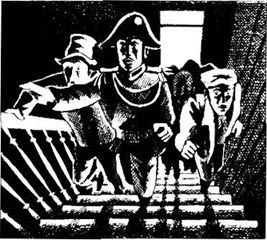
亨利·杜瓦尔，邻居
“我同意伊桑多尔·穆塞特说的，除了关于声音的问题。那个尖利的声音说的是意大利语——我敢肯定那不是法语。不，我不懂意大利语，可我敢肯定那听起来像是意大利语。我认识埃斯巴耐夫人和她的女儿，那声音绝不是她们其中任何一个的。”
简·奥登海默，帮厨
“我路过那所房子时刚好听见一阵长长的、凄厉的尖叫声，我随其他人冲进了房子，上楼时听见了那两个声音。我是荷兰人，不懂法语，可我肯定那个尖利的声音是一个男人的——一个法国男人。我听不清说的是什么，可那声音听起来非常愤怒，并充满恐惧。那个低沉的声音说了很多遍‘魔鬼’”。
朱尔斯·米纽，银行家，米尼奥桑银行
“八年前埃斯巴耐夫人在我的银行开了一个账户。她很少从账户里取钱，可是就在她被害三天前她取走了4,000法郎。这笔钱是用黄金支付的，由一个职员带到她位于莫尔格街的房子。”
阿道夫·勒邦，米尼奥桑银行职员
“星期一大概中午12点的时候，我带着装有4,000法郎的两个袋子随埃斯巴耐夫人回家。埃斯巴耐小姐开了前门，拿走了一个袋子，然后夫人接过了另一只。道别后我便离开了。当时街上没人。”
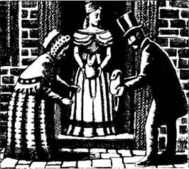
威廉·波德，音乐家
“我是一个英国人，在巴黎已经住了两年了。我和其他人一起进入了房子，上楼时听见了那两个声音。那个低沉的声音是一个法国男人的——我记得听见他说‘天啊’。我还听到了像是打斗的声音。那个尖利的声音特别大——比那个低沉的声音大得多。那声音不是英国人的。我觉得是德国人的，可能还是个女人。不，我不懂德语。”
几名证人说五楼那个房间的门是锁着的，并且是从里面上的锁。他们赶到楼上时周围静悄悄的，撞开房门后发现房间里空无一人。两扇窗户紧闭，并且都是从里面扣住的。警方仔细地搜查了房子——每一个房间、烟囱和角落——却一无所获。证人们在听见说话声和撞开房门之间相隔多久这个问题上也说法不一——有人说是三分钟，有人则说是五分钟。
阿方索·加西亚，厨师
“我住在莫尔格街，不过我是西班牙人。因为太害怕我没敢上楼，可我听见了争吵的声音。那个低沉的声音说的是法语，而那个尖利的声音是一个英国人的。是的，我敢肯定。不，我不会说英语，可我知道英语听起来是什么样子。”
阿尔贝托·蒙塔尼，水果商贩
“我也是最先上楼的一个，听见了说话声——一个声音低沉的法国人生气地说着什么，还有一个尖利的声音，语速很快，含糊不清。我觉得是一个俄国人的声音。是，我是意大利人。我从未和俄国人说过话。”
保罗·迪马，医生
“黎明时分我被叫去验尸。两具尸体当时都放在五楼的房间里。那位年轻小姐的尸体由于被塞进烟囱而青一块紫一块，伤痕累累。她脸色铁青，眼球外凸，颈部有很严重的淤青，还有强有力的手指留下的深红色指痕。从这些指痕可以看出她是如何被害的。母亲的尸体也是严重挫伤，并且右腿和右胳膊全部骨折。这是怎么回事呢？我不清楚——可能是被一根像桌腿一样沉重的木头打的。脖子是被剃刀切断的，头已经与身体分离。这都是一个非常强壮的人干的——一个男人，而且非常强壮。”
在巴黎从未发生过如此神秘的案子。这个或这些凶手是如何逃出房子的呢？房间的门窗都锁着。房子所有的烟囱都极其窄小，人根本无法钻出去，没有后楼梯，通向屋顶的天窗也已经破旧得难以打开了。证人们听见的声音是谁的？房间里的钱为何没有被拿走？警方找不到这些问题的答案。
4 Auguste Dupin visits the Rue Morgue
4
Auguste Dupin visits the Rue Morgue
Dupin read all this with great interest, and was the first to open the evening newspaper when it arrived.
He read silently, and then said, 'There is nothing new about the murders, but the police have arrested Adolphe Le Bon. Why, I don't know.' He looked at me. 'Well, my friend, what do you think about these murders?'
'It's a great mystery,' I said. 'It will be impossible, surely, ever to find this murderer.'
'We must not say "impossible" just because the police have done nothing,' said Dupin. 'The Parisian police do find the answers sometimes, but that is usually because of hard work, not because they are clever. Very often, you see, they don't think clearly. They look very hard at one or two things, but they don't see everything. You remember the saying, "They can't see the wood for the trees"? Well, sometimes it's important to stand back and look at the whole wood, and forget about the trees. Now, why don't we do a little detective work ourselves, and go round to the Rue Morgue? Adolphe Le Bon was once very helpful to me, and I would like to help him if I can. I know the police inspector, and I'm sure he will say that we can look round the house. So, shall we go?'
We went that same afternoon. We found the house easily because there were still people in the street looking up at the closed shutters. It was the usual kind of Parisian house, with nothing surprising about it. Before we went in, we walked up the street, turned down a narrow side street, and turned again to walk past the back of the building. Dupin looked at everything—the ground, the walls, the windows, the shutters—but I did not know what he was looking for.
Then we went inside, and a policeman took us up to the fourth floor. The two dead bodies still lay there, with the broken chairs and tables all around them. Again, Dupin looked at everything—the room and the bodies—very carefully. Then we went down into the yard at the back. It was dark when we left the Rue Morgue, and on our way home Dupin went in for a moment to the office of one of the daily newspapers.
That evening my friend would not answer any of my questions. But the next day he suddenly asked me, 'Did you see anything peculiar in that house in the Rue Morgue?'
I don't know why, but his question made me afraid. 'No, nothing peculiar,' I said. 'Well, nothing more peculiar than what we both knew from the Gazette.'
'Neither the Gazette nor the police,' said Dupin, 'understand much about these murders. The police are puzzled by all the questions which they cannot answer. What was the motive for the murders? Why were the murders so brutal? Whose were the voices? How could these people get out of the house when the neighbours were running up the stairs? Why was everything broken in the room? Why was the girl's body up the chimney? Why did the old lady have so many broken bones?
'I'm afraid the police are making the mistake that many people make. They think that because the crime is so unusual, they can never explain it. But they are wrong. It is more helpful to have an unusual crime, because that will make us think harder, and ask the right questions, and in the end find the answer. We must not ask the question, "What has happened?"; we must ask, "What has happened that has never happened before?" The answer to this mystery is not really difficult at all—I think I know it already.'
I looked at him, astonished, and could not say a word.
'I am now waiting,' he went on, 'for a person who is probably not the murderer himself, but who certainly knows something about the murders. He will arrive here—in this room—at any moment. I hope, and think, he will. And if he does come, it will be necessary to stop him leaving. Here are four guns, two for you and two for me. We both know how to use them if we have to.'
saying n. well-known phrase, proverb, etc.; remark often made. 谚语，格言，俗话。
not see the wood for the trees not see or understand the main point, subject, etc. because one is paying too much attention to details. 见树不见林。
side-street n. minor street branching off a major street. 小巷。
peculiar adj. odd or strange. 奇怪的，奇异的。
puzzled adj. unable to understand；confused. 无法了解的，困惑的，茫然的。
motive n. that which causes sb. to act in a particular way; reason. 动机，原因。
right adj. best in view of the circumstances; most suitable. 最切合实际的，最适宜的，最恰当的。
奥古斯特·杜邦造访莫尔格街
4．奥古斯特·杜邦造访莫尔格街
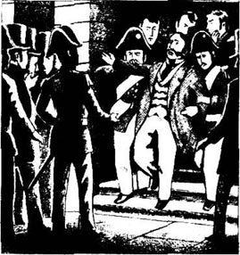
杜邦对这些新闻很感兴趣，晚报一到他就抢先打开看起来。
他静静地看了一会儿。然后说道：“这桩凶杀案没什么新进展，可是警方已经逮捕了阿道夫·勒邦。不知道是什么原因。”他看了看我，“哎，我的朋友，你怎么看待这桩凶杀案？”
“一个难解之谜，”我说，“凶手肯定永远不可能找到了。”
“我们不能因为警方无所作为就说‘不可能’，”杜邦说，“巴黎警方有时确实能够揭开谜底，可那通常是靠他们的努力而并非智慧。你知道很多时候他们并没有清晰的思路。他们只盯着一两件东西，而看不到全部。‘见树不见林’，你记得这句谚语吧？嗯，有时候站得远一点，看到整个树林而忽略单个的树是很重要的。现在我们何不亲自干点侦探的活儿，去莫尔格街转转呢？阿道夫·勒邦曾经给过我很多帮助，我也要尽可能地帮助他。我认识那里的巡官，他肯定会让我们看看那所房子的。那么，我们出发吧？”
当天下午我们就去了。我们很容易便找到了那所房子，因为街上仍有人在仰着头看那些紧闭的窗板。这房子是在巴黎街头最常见的一种，并无新奇之处。我们没进房子之前，先是沿着街道向前走去，拐进一条狭窄的小巷，而后又转弯走到了房子的后面。杜邦仔细地查看了每件东西——地面、墙壁、窗户、窗板——可我不明白他在找什么。
后来我们进入了房子里，一个警察把我们带到五楼。两具尸体仍然放在那里，周围全是残桌破椅。杜邦还是查看了这里的一切——房间、尸体——看得很仔细。然后我们又去了后院。离开莫尔格街时天已经黑了，回去的路上杜邦去一家日报社待了一会儿。
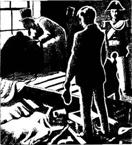
那晚我的朋友不愿意回答我的任何问题。可第二天他突然问我，“你注意到莫尔格街那所房子有什么异常了吗？”
他的问题使我莫名地害怕起来。“没有，没有什么异常啊，”我说，“唉，什么都比不上我们从《新闻传播》上看到的异常。”
“《新闻传播》和警方，”杜邦说，“都不十分清楚这桩凶杀案是怎么回事。警方被那些谜团搞得晕头转向。凶杀案的动机是什么？为什么作案手段如此凶残？是谁在说话？这些人又如何在邻居们飞奔上楼时逃出房子？房间里为什么会一片狼藉？女孩的尸体为什么被竖着塞进烟囱里？老太太又为何有如此多处的骨折呢？”
“恐怕警方犯了和许多人一样的错误。在他们看来，这桩案子如此离奇，他们永远都侦破不了。可他们错了。一桩奇案对我们是大有帮助的，它会让我们多动脑子，问最恰当的问题，并最终揭开谜底。我们不该问这样的问题：‘发生什么事了？’；我们必须问：‘有什么前所未有的事发生了？’这个迷案的谜底其实一点儿也不复杂——我想我已经知道了。”
我吃惊地看着他，一句话也说不出来。
“我在等，”他继续说道，“等一个人，他很可能不是凶手，却肯定知道些凶杀案的情况。他会到这来——到这间屋子里——随时都可能来。我希望他能来，也觉得他会来。如果他真的来了，就必须留住他不让他走。这里有四把手枪，你我各拿两把。我们都清楚万不得已的时候该怎么用它。”
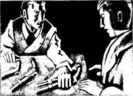
5 The mysteries of the voice and the window
5
The mysteries of the voice and the window
I took the guns, but I didn't really understand why, or who we were waiting for. So I was pleased when Dupin began to explain his thoughts to me.
'Now, let's think,' he said, 'about those angry voices heard by the neighbours running up the stairs. Think about the newspaper reports of what the witnesses said. Do you remember anything peculiar in what they said?'
'Well,' I replied, 'all the witnesses agreed that the deep voice was that of a Frenchman. But none of them agreed about the other voice, the shrill one—they all thought something different.'
'Yes, that was what they said, but you haven't understood what's peculiar about it,' said Dupin. 'The peculiar thing is—not that they disagreed—but that they all thought it was the voice of a foreigner. Each witness thought the voice spoke a language that they didn't know. Look at this list.' He showed me a piece of paper.
· One Frenchman thought the voice spoke in Spanish, but he didn't hear any words.
· A second Frenchman thought the voice spoke in Italian, because of the sound of the words, but he didn't know Italian himself.
· A Dutchman thought the voice spoke in French, but he himself didn't speak French.
· An Englishman thought the voice spoke in German, but he didn't understand German.
· A Spaniard thought the voice spoke in English—he couldn't speak English but he knew what it sounded like.
· And last, an Italian thought the voice spoke in Russian, but this man has never spoken to a Russian person.
'So! What a strangely unusual voice this was!' said Dupin. 'Speakers of five European languages did not hear one word—not one word—that they knew. It was also a strangely shrill voice, and was it a man's voice or a woman's? No one could tell.'
'But perhaps the voice was speaking an African language,' I said. 'Or an Asian one.'
'That is always possible,' Dupin agreed, 'but do you begin to see what question we must ask next?'
Puzzled, I shook my head.
'Well, we will come back to the voice later,' said Dupin. 'But for me, my thoughts about the voice already told me what to ask next. So, let us close our eyes and remember that room on the fourth floor of the house in the Rue Morgue. What do we want to find out first? The way the murderer got out of the room. Let's think about all the possible ways. First, the door to the passage was locked, with the key on the inside. We cannot argue with a key in a locked door. There were no secret doors—the police have looked at every centimetre of the floor, the ceiling, and the walls. And I also looked very carefully. So, no secret doors. What about the chimney? It is wide enough for a body for three metres, but higher up it is much narrower. Not even a cat could climb through it to the top. So what is left?'
'The two windows,' I said. 'But they were fastened on the inside, weren't they?'
'Yes, and no,' said Dupin. 'Let me explain. We can see all of the window on the left, you remember, but only the top half of the window on the right, because the head of the bed is pushed up next to the window. The police tried to open the window on the left, but found a very strong nail in the wood, which stopped the window opening. Another big nail was found in the other window. And the police stopped there. No one could get out of these windows, they thought, because of the nails and because both windows were fastened on the inside. So they did not try to take out the nails and open the windows.
'But I went on thinking. The windows were the only possible way, so the murderer did escape from one of these windows. But they were fastened on the inside, and how did the murderer fasten the window again—from the outside? There was only one answer. The window could fasten itself. I took out the nail from the window on the left, but the window still would not open. So I was sure there was a hidden spring somewhere, and after a while I found it. I pressed it, arid then I could open the window.
'I put the nail back into its hole, and thought some more. The murderer gets out through the window, then the window drops down again behind him, and fastens itself by its hidden spring. But the nail—how could anybody put back the nail from the outside? I went to the other window and stood on the bed, looking down behind the bed head at the bottom half of the window. The nail in this window looked the same, but ... There must be something wrong with this nail, I said to myself. I touched it—and the head of the nail came off in my fingers. The rest of the nail stayed in the wood. I carefully put back the broken nail head, pressed the hidden spring, and lifted the window a few centimetres. The nail head went up and came down with the window, but still looked like a real nail.'
'So,' I said, 'we know it was possible to escape throught the window behind the bed head. But the room was on the fourth floor ...'
'Ah,' said Dupin, 'that was the next question. You remember, don't you, how we walked around the building? And you saw, didn't you, the lightning-rod that went up the back wall of the building? And the unusual shutters on the windows on the fourth floor?'
'Yes,' I said, 'they were like doors, but the top half was latticed, which is unusual in Paris.'
'Yes,' Dupin said, 'and very easy for a hand to get hold of. Now, let me describe a possible picture to you. The lightning-rod on the wall is less than two metres from the window by the head of the bed. The latticed shutter is more than a metre wide, and when it is open and against the wall, it is only about half a metre away from the lightning-rod. It is possible to climb up the lightning-rod to the fourth floor. Then, a strong and agile—very agile—person could take hold of the latticed shutter with both hands, push his feet against the wall, and swing himself and the shutter across the window. And if the window is open and this person is very agile indeed, he could swing himself into the room.'
Dupin saw the surprise in my face. 'Remember,' he said, 'that I am talking about somebody who is very strong and agile—agile in a very unusual way, perhaps. Remember also the voice, that peculiar, shrill voice, which spoke in a language that nobody knew.'
At these words I felt I almost understood what Dupin was saying. But I wasn't sure, so I said nothing and waited for him to go on explaining.
disagree v. have a different opinion; not agree. 持不同观点；不同意。
foreigner n. person from a country other than one's own. 外国人。
thoughts n. idea or opinion produced by thinking. 看法；想法；意见。
shake one's head turn one's head from side to side as a way of indicating 'no', or to express doubt, sorrow, disapproval, etc. 摇头（表示否定、怀疑、悲伤、不赞成等）。
passage n. narrow way through sth., esp. with walls on both side; corridor. 通道；（尤指）走廊。
centimetre n. one 100th part of a metre. 厘米。
nail n. small thin piece of metal with a sharp point at one end and a flat head at the other, hammered into articles to hold them together, or into a wall. etc. for use as a peg to hang things on. 钉子。
escape vi. get free; get away. 逃脱，逃走。
spring n. device of twisted, bent or coiled metal or wire that can be pushed, pulled or pressed but tends to return to its original shape or position when released. 弹簧，发条。
come off become detached or separated from sth. 从某物上脱落或分离。
lightning-rod n. metal rod or wire fixed to an exposed part of a building, etc. to prevent damage by lightning. 避雷针。
lattice vt. to construct or furnish with a lattice or latticework. 用格状结构组成或装饰。
agile adj. able to move quickly and easily; active; nimble. 敏捷的；灵活的；活泼的；机敏的。
swing v. move to and fro while hanging or supported.（吊着或支着）摇动，摇摆。
声音和窗户之谜
5．声音和窗户之谜
我拿了手枪，却实在不明白为什么要这样做，还有我们到底在等谁。所以我很高兴听到杜邦向我解释他的想法。
“现在让我们想想，”他说，“关于那些正往楼上跑的邻居们听见的愤怒声音。想想报纸对证人证词的报道。你记得他们提到有什么异常的事情吗？”
“嗯，”我答道，“所有证人都认为那个低沉的声音是一个法国男人的。但他们对另外一个声音，就是那个尖利的声音，说法不一——他们的想法各不相同。”
“是的，报道中确实是这么说的，但你还没看出这里面的异常，”杜邦说，“异常的事情——并非是他们意见相左——而是他们都认为那是一个外国人的声音。每个证人都认为这个声音说的是一种他们不懂的语言。看看这张单子。”他递给我一张纸。
* 一个法国人认为那声音说的是西班牙语，可他一个字也没听清。
* 另外一个法国人因为字词的发音而认为那声音说的是意大利语，但他并不懂意大利语。
* 一个荷兰人认为那声音说的是法语，可他并不会讲法语。
* 一个英国人认为那声音说的是德语，可他不懂德语。
* 一个西班牙人认为那声音说的是英语——虽不懂英语，可他知道英语听起来是什么样子的。
* 最后，一个意大利人认为那声音说的是俄语，可这个人从未与俄国人说过话。
“看！这声音多么超乎寻常啊！”杜邦说，“这些人说五门欧洲语言，却连一个字也没听懂——一个他们知道的字也没听出来。这个声音异常尖利，是男人的还是女人的呢？没人说得清。”
“或许那声音说的是一种非洲语言啊，”我说，“或是一种亚洲语言。”
“不能排除这种可能，”杜邦表示赞同，“你知道我们下一步该问什么问题了吧？”
我疑惑地摇了摇头。
“好，我们待会儿再说那声音，”杜邦说，“但是对于我来说，在我琢磨那个声音时我已经知道下一步要问的问题了。那么，让我们闭上眼睛，想想莫尔格街那所房子五楼的房间吧。我们最想知道什么呢？凶手是如何逃出房间的。想想所有可能的路径。首先，通往走廊的门是从里面锁住的。这就没什么好争论的了。警方已经把地板、天花板和墙壁都搜过了——没发现暗门。我也仔细瞧过了。的确没有暗门。那烟囱呢？三米之内人还可以钻过去，可再往高处去就越来越窄了。连只猫都钻不到头。还有什么呢？”
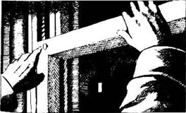
“那两扇窗户，”我说道，“但它们从里面锁住了，不是吗？”
“是，也不是，”杜邦说，“听我解释。我们可以看到左边的整扇窗户，记得吧，可因为有床头挡着，只能看见右边窗户的上半部分。警方试图把左边的窗户打开，却发现一枚很硬的钉子楔在窗户里，使得窗户无法打开。另一扇窗户上也有一枚大钉子。警方就此停住了。在他们看来，有这些钉子，并且窗户均由内上锁，没有人可以从窗户逃出去。因此他们也就没有想着拔出钉子打开窗户看看。
“可是我想到了。窗户是惟一可能的逃脱路径，凶手一定是从其中的一扇窗户逃走的。但是窗户又是从里面上锁的，凶手怎么可能把它重新锁住——从外面把它锁上呢？答案只有一个，窗户可以自动关闭。我拔下了左边窗户上的钉子，但窗户依旧打不开。所以我确信什么地方一定有一个隐秘的弹簧，不一会儿我就找到了它。我按了一下，窗户就可以打开了。”
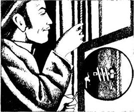
“我把钉子重新放回去，又想了一下。凶手从这扇窗户逃出去，之后窗户又在他身后关上了，靠着隐秘的弹簧自动锁住。但是这枚钉子——谁能够从外面把钉子放回去呢？”我走到另一扇窗户前，站在床上向下看被床头挡住的下半部分窗户。窗户上的钉子似乎是一样的，但是……我对自己说，这枚钉子一定有问题。我碰了碰它——钉子帽儿竟然掉到了手里。余下的那截钉子仍然嵌在木头里。我小心翼翼地把掉下来的钉子帽儿重新安上去，按了一下隐秘的弹簧，窗户就可以向上推几厘米。钉子帽儿随窗户上下活动，但看起来和一个真正的钉子没什么区别。”
“这样，”我说，“我们就知道从床头后的窗户逃走是可能的。可是那个房间在五楼……”
“哦，”杜邦说，“这就是下一个该问的问题。你一定还记得我们怎样绕着房子走吧？你一定也看到了竖立在房子后墙上的避雷针？还有五楼窗户上与众不同的窗板？”
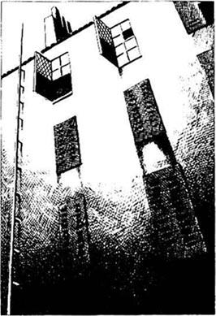
“对，”我答道，“它们很像门，但是上半部分却做成格状，这在巴黎倒不常见。”
“是的，”杜邦说，“并且很容易被手扒住。现在，让我给你描述一个可能的画面。墙上的避雷针距离床头边的窗户不到两米远。格状的窗板有一米多宽，当窗板打开并紧贴墙壁时，它离避雷针就只有大约半米远。顺着避雷针爬到五楼是有可能的。这样，一个身强力壮并且动作敏捷——极其敏捷——的人就可以用双手抓住格状的窗板，双脚一蹬墙，身体就可以随窗板荡到窗户跟前。如果窗户恰巧是开着的而且这个人又确实身手敏捷，他就可以荡进房间里。”
杜邦注意到了我脸上惊讶的表情。“记住，”他说，“我说的是一个身体非常强壮、动作极为敏捷的人——他可能敏捷得超乎寻常。还要记住那个声音，那个古怪尖利的声音，说着一种无人知晓的语言。”
听到这些我感觉差不多已经明白了杜邦在说什么。但我还不敢肯定，于是默不作声，等着他继续解释。
6 A madman has done this
6
A madman has done this
'You will see,' my friend went on, 'that I have tried to answer another question. Not just "How did the murderer get out of the room?", but also "How did he get into it?" He used the same window both ways, I think.'
'But now, let's look again at the room. You remember that on the floor there were two bags of gold, which Adolphe Le Bon carried to the house three days before.' The police are so excited by this! Nearly four thousand francs in gold! Here, they say, is the motive for the murder. Well, four thousand francs in gold is a lot of money, and is certainly a possible motive for murder. But remember, my friend, the gold was not taken—it was still there, on the floor. So what kind of thief is that? A very, very stupid one, a thief who murders two women and then when he leaves, forgets to take the gold with him! No, no, we must forget the gold. It was not the motive for these murders.
'So far, then, the picture is like this. We have a murderer with a peculiar voice, and who is unusually agile. We have a murder without motive, a murder that is brutal and horrible even for the worst kind of criminal. How many murderers kill with their own hands, and then push the body, head downwards, up a chimney? And how strong our murderer is! He pushed the body up alone, but it took three or four people to pull it down. And think of those handfuls of long grey hair on the floor. Have you ever tried to pull hair out of someone's head? You need to be very strong to do that. You also need to be strong to cut right through someone's neck—with just a razor. And why did the old lady have so many broken bones? Because the murderer pushed her body through the open window, and it fell down onto the stones of the yard below.
'One more thing to finish the picture. Remember what the room looked like-broken chairs and tables everywhere, the mattress on the floor, nothing in its place. Now, surely, our picture is finished. What kind of murderer is so unusually strong, so unusually agile, has so peculiar a voice, kills in so brutal and horrible a way, without motive? Tell me, what is the answer?'
I felt a little ill when Dupin asked me this question. I shook my head. 'A madman,' I said, 'has done this—a wild and horrible madman, who has escaped from some hospital somewhere.'
'That is a possible answer, certainly,' Dupin replied. 'But even madmen do not have as peculiar a voice as the one heard on the stairs. Madmen speak a language of some kind. Perhaps they say strange things, but at least they speak in words. Now, there is one more thing ...'
Dupin put his hand in his pocket and took something out. He put it on his hand and held it out to me. It was some short, orangey-brown hair.
'I took this from between the fingers of Madame L'Espanaye's hand,' he said. 'What do you make of it?'
'Dupin!' I said, astonished and afraid. 'This hair is most unusual. It is not human hair!'
'Did I say it was?' Dupin said. He put the hair back into his pocket, and then showed me a piece of paper. 'You remember the marks on the neck of Mademoiselle L'Espanaye—marks made by the fingers that killed her? Here is a drawing of those marks, just as they were on the neck. Now, please put your hand on the paper, with all your fingers in the same places as the marks.'
I tried to do this, but could not. I don't have small hands, but my fingers were much shorter and my hand much narrower than the marks on the drawing.
'These marks,' I said, 'were not made by a human hand.'
Dupin stood up and went to get a book from the table behind him. He brought the book to me.
'I want you to read this page,' he said.
The page described an animal that is found in the East Indian Islands—the orang-outang. It is a very large animal, bigger than a man, and is strong, agile, clever, and very, very dangerous. At once I understood just how horrible these murders were.
'Your drawing of the marks made by the fingers,' I said, 'is just as the book describes the orang-outang's hand. Also, the book describes its orangey-brown hair, which sounds just like the hair you showed me. But I still can't understand this terrible mystery. People heard two voices arguing—and the other voice was the voice of a Frenchman. Everybody agreed about that.'
'True,' said Dupin. 'And you will remember two of the words they heard—Mon Dieu. When do we say this? When we are angry, afraid, surprised, unhappy ... I have thought about these words and made a little picture of this Frenchman, which will answer all the questions in this mystery. This is my picture. A Frenchman brings home an orang-outang from the East Indian Islands, but one night the animal escapes from him. Our Frenchman follows it through the city, trying to catch it. When the orang-outang gets into the house in the Rue Morgue, the Frenchman sees what happens, but cannot catch the animal or stop it killing the two women.
'Is this picture a true one? Of course, I don't know. But if I am right, the Frenchman himself is innocent of these murders. And if he is innocent, perhaps he will answer my advertisement. I left it at the office of Le Monde newspaper on our way home last night.'
Dupin gave me a piece of paper, and I read this:
CAUGHT IN THE BOIS DE BOULOGNE, early in the morning of the 4th of June, a large orang-outang, probably from the East Indian Islands. The owner, who is a sailor on a Maltese ship, can have the animal back if he comes to the following address in the Faubourg St. Germain...
Once again, I was astonished by what Dupin knew. 'How could you possibly know,' I asked, 'that the man was a sailor, and that he belonged to a Maltese ship?'
'I do not know it,' said Dupin. 'I am not sure of it. But I found this small piece of ribbon on the ground at the bottom of the lightning-rod. Look.'
He gave me the ribbon to look at. It was a dark-red colour, and old and dirty.
'Sailors always use ribbons like these,' Dupin said, 'to tie back their long hair. And this colour is a favourite of Maltese sailors. You see, if I am right about this, it will make the man think carefully.'
'But will he answer the advertisement?' I said. 'He saw the terrible things that his orang-outang did. Won't he be afraid to say he is its owner?'
'Yes, he will he a little afraid,' said Dupin. 'But I hope that he will think like this, and will say to himself: I am innocent. I am poor. I can sell my orang-outang for a lot of money, and I don't want to lose that money. What danger am I in? They found the animal in the Bois de Boulogne—a long way from that house in the Rue Morgue. Who will ever know that the orang-outang did those murders? Or that I saw what happened? The police know nothing. But this advertiser knows something about me. If he wants to, he can find me easily. If I don't answer the advertisement, perhaps he will think that I have something to hide. He will start asking questions, about the animal, or about me, perhaps. No, it's better for me to answer the advertisement, get the orang-outang back, and keep the animal hidden away for a time.'
At the very moment when Dupin stopped speaking, we heard the sound of feet on the stairs.
stupid adj. foolish. 愚蠢的，笨的。
criminal n. person who commits a crime or crimes. 犯人，罪犯。
handful n. as much or as many as can be held in one hand. 一把，一撮。
madman n. person who is insane. 疯子，狂人。
make sth. of sth. understand the meaning or nature of sth. to be sth. 理解某物的意义或性质。
orang-outang n. large ape with long arms found in Borneo and Sumatra. 猩猩（产于婆罗洲和苏门答腊）。
dangerous adj. likely to cause danger or be a danger. 有危险的，危险的。
stop sb. (from) doing sth. prevent sb. from doing sth. 阻止某人做某事。
innocent adj. not guilty. 无辜的，无罪的，清白的。
advertisement n. public notice offering or asking for goods, services, etc. 广告（推销或征求货物、服务等）。
sailor n. member of a ship's crew, esp. one below the rank of officer; seaman. 海员；水手。
Maltese adj. of Malta. 马耳他的。
ribbon n. silk, nylon, etc. woven in a narrow strip and used for tying sth. or for ornament.（丝、尼龙等的）捆扎带，装饰带。
advertiser n. person who advertises. 登广告的人。
这是疯子所为
6．这是疯子所为
“你会发现，”我的朋友继续说，“我还一直想回答另外一个问题。”不光是‘凶手如何逃出房间？’，还有‘他是如何进来的？’我认为他出入都是靠着这扇窗户和同样的方法。
“但是现在，让我们再回到房间里。你记得吧，地上有阿道夫·勒邦三天前带到那儿的两袋子黄金。警方看到这些很是激动！将近4,000法郎的黄金啊！他们说这就是凶手的作案动机所在。的确，4,000法郎的黄金是很大一笔钱，当然可能是凶手的一个作案动机。但记住，我的朋友，金子并没被拿走——它仍旧在那儿，放在地板上。这到底是怎样一种窃贼啊？他愚蠢至极，杀害了两个女人，走时却忘了带上金子！不，不，我们必须忘掉黄金。这不是这桩凶杀案的动机。”
“那么到目前为止，这幅画面是这样的。这个凶手声音古怪、动作异常敏捷。这个凶手没有作案动机，这个凶手的恐怖凶残甚至令最凶恶的罪犯也望尘莫及。有多少凶手会用手掐死被害人，然后把尸体头朝下地塞进烟囱呢？而且这个凶手会是多么强壮啊！他一个人就把尸体塞了进去，可是要三四个人一起才能把尸体拽出来。想想地板上那几撮灰色的长发。你有没有试过拔掉别人的头发？你必须非常强壮才行。你也必须非常强壮，才能够扎穿人的脖子——只用一把剃刀扎穿人的脖子。老太太为什么有如此多处的骨折呢？因为凶手把她的尸体从开着的窗户推了出去，尸体摔在了后院的石地上。”
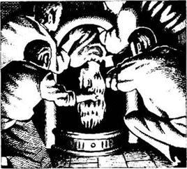
“给这幅画面加上最后一笔。还记得那个房间什么样子吧——残桌破椅到处都是，床垫甩在地板上，一切都面目全非。好，现在我们的这幅图画完成了。是什么样的凶手，如此异常的强壮而又异常的敏捷，声音如此古怪，作案如此粗暴凶残，而又没有作案动机？告诉我，答案是什么？”
杜邦的问题让我有点难受。我摇了摇头。“是一个疯子，”我说，“是一个疯子干的——一个从某个医院逃出来的粗野恐怖的疯子。”
“当然那也是一种可能，”杜邦答道，“但是就算是疯子也不会发出在楼梯上听到的那种古怪的声音。疯子总归要说某一种语言的。他们可能会说一些奇奇怪怪的东西，但至少他们说的是字词。哦，还有一件东西……”
杜邦把手伸进口袋掏出了点什么。他把它放在手里伸给我看。是一撮棕黄色的短发。
“这是我从埃斯巴耐夫人的手指缝里找到的。”他说，“你怎么看？”
“杜邦！”我既惊讶又害怕，“这毛发很不一般。它不是人的毛发！”
“我说过它是人的毛发吗？”杜邦说道。他把那些毛发放回口袋，然后拿给我一张纸。“还记得埃斯巴耐小姐脖子上的指痕吗——杀害她的凶手留下的指痕？这是按照脖子上的指痕描下来的指痕图。现在，请把你的手放在纸上，每根手指都要放在和指痕一模一样的位置上。”
我试了一下，却做不到。我的手并不算小，可是和图上的指痕比起来，我的手指短很多，手掌也窄很多。
“这些指痕，”我说，“不是人的手留下的。”
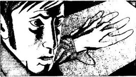
杜邦站起来从他后面的桌子上拿了一本书。他把书递给我。
“我想让你看看这页。”他说。
这页书讲的是在东印度群岛发现的一种动物——猩猩。它非常高大，比人的块头要大得多，强壮、敏捷、聪明，并且极其危险。我一下子明白这桩凶杀案有多么恐怖了。
“你画的指痕，”我说，“和这本书上描述的猩猩的手掌一模一样。还有，书上有关于它棕黄色皮毛的描述，听起来就和你给我看的那撮一样。可是我仍然想不通这桩可怕的迷案。人们听到了两个争吵的声音——其中一个是一个法国男人的。这一点人们达成了共识。”
“对，”杜邦说，“你一定记得他们听到的那个词——‘天啊’。什么情况下我们才会说这个呢？生气、害怕、惊讶、郁闷……我仔细地想了想这些话，对这个法国人有了一个大致的描绘，有了这个，迷案中的所有问题就可以迎刃而解。这就是我的描绘。一个法国男人从东印度群岛带回了一只猩猩，但一天晚上猩猩从他那里逃跑了。这个法国人为了抓住它就跟着它在城里跑来跑去。后来猩猩闯进了莫尔格街的房子，这个法国人目睹了发生的一切，却无法抓住那动物或阻止它杀害那两个女人。”
“这个描绘的真实性如何呢？我当然不知道。但如果我是正确的，那这桩凶杀案就不是这个法国人本人干的。而如果他是清白的，他就有可能回应我的启事。昨晚在我们回家的路上我把这个给了《世界报》报社。”
杜邦递给我一张纸，上面写着：
6月4日清晨，在布洛涅的树林里抓到了一只可能来自东印度群岛的大猩猩。它的主人，一个在马耳他船上工作的水手，可以到圣日尔曼区领回这只动物，地址如下……
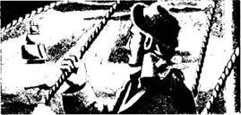
我又一次被杜邦所知道的东西吓了一跳。“你怎么会知道，”我问道，“那个人是一名水手，并且又在一条马耳他船上工作呢？”
“我不知道，”杜邦说。“我也不能肯定。但是我在避雷针底下的地面上发现了这条细丝带。你看。”
他把丝带递给我看。丝带是深红色的，又旧又脏。
“水手们经常用这样的丝带，”杜邦说，“把长发扎在后面。这个颜色是马耳他水手们很喜欢的一种。你看，如果我的这些推断是正确的，这个人可得好好盘算一下了。”
“但是他会回应那则启事吗？”我说道，“他目睹了他的猩猩的胡作非为，他难道不害怕承认自己是猩猩的主人吗？”
“对，他一定会有些害怕，”杜邦说，“不过我希望他会这么想，这样告诉他自己：我是清白的。我很穷。我的猩猩可以卖好大一笔钱，我可不想白白丢了这笔钱。我是不是正身处险境呢？他们是在布洛涅树林里找到那只动物的——那里离莫尔格街那所房子可很远呢。谁会想到那桩谋杀案是那只猩猩干的呢？谁会知道我目睹了那一切呢？警方一无所知。但是刊登启事的人知道我的一些情况。如果他想找到我，是很容易的。如果我不回应那则启事的话，他就可能认为我要隐瞒什么。他就会开始问很多问题，关于那只动物的，可能还有关于我的。不，我最好还是去回应那则启事吧，把猩猩领回来，把它藏匿一段时间。”
就在杜邦说完的那一刹那，我们听到了楼梯上传来的脚步声。
7 A visitor for Auguste Dupin
7
A visitor for Auguste Dupin
'Be ready with your guns,' said Dupin. 'But don't use them or show them until I say.'
The front door of the house was open, and the visitor was already half way up the stairs. The feet stopped for a moment, then began again, and a few seconds later there was a knock on the door of our room.
'Come in,' called Dupin, in a friendly way.
The door opened and a man came in. He was a sailor, clearly—a tall, strong man, with a sunburnt face. He was carrying a heavy stick, but no gun. He looked first at me, then at Dupin, and did not smile.
'Good evening,' he said.
'Sit down, my friend,' said Dupin. 'You've come about the orang-outang, yes? My word, what a fine animal that is! You're lucky to own him. Do you know how old he is?'
The sailor sat down and the worried look left his face. 'No, I don't know,' he said. 'But he's probably not more than four or five years old. Have you got him here?'
'Oh, no. We couldn't keep him in this house,' Dupin said. 'He's at a place in the Rue Dubourg, just round the corner. You can get him in the morning. Of course, you must show me that you are the real owner.'
'Yes, sir, of course,' the sailor said.
'I shall be sorry to lose the animal,' said Dupin.
'I'm very happy to pay something,' the man said. 'I know it's expensive, keeping an animal like that.'
'Well,' said my friend, 'that's good of you. What shall I ask? Let me think ... Ah yes! This is what I want. You must tell me everything—everything—about these murders in the Rue Morgue.'
Dupin said these last words very quietly. Just as quietly, he walked to the door, locked it, and put the key in his pocket. He then took a gun from his coat pocket and put it, slowly and quietly, on the table in front of him.
The sailor's face turned a deep red. He jumped to his feet and took up his heavy stick. But a minute later he fell back into his chair, and sat there, shaking, with a face now as white as death itself. He said not a word. I felt deeply sorry for him.
'My friend,' said Dupin, in a kind voice, 'there's no need to be afraid—really no need. You are not in any danger from us. I know very well that you yourself are innocent of these terrible murders in the Rue Morgue. But you do know something about them. You are not a murderer, or a thief, and you have nothing to hide. But you must tell me the true story. The police have arrested an innocent man for these murders. And if you don't speak, this man will go to prison, perhaps lose his life.'
The sailor was silent for a while. Then he said, 'God help me. I will tell you what I know. You will think it's a very strange story, but it's true. I am innocent, and I must help this other man if I can.'
This was the sailor's story.
I have just come back from the East Indies. While I was there, I visited the island of Borneo. There I found and caught this orang-outang. It is a wild and dangerous animal, and I had a difficult journey home. But at last, we arrived back in France, and I took the animal to my house in Paris. I kept it hidden because of the neighbours, and I was planning to sell it as soon as possible for a lot of money.
On the night of the 3rd of June I was out late with some friends. When I got back home, I found the orang-outang in my bedroom, with my razor in its hand. The door to its own room was broken to pieces. I just didn't know what to do. The animal is dangerous at the best of times, but with a razor in its hands...! On the ship home I always used a whip to keep the animal quiet, so I went to find my whip now. But the minute the orang-outang saw the whip, it ran out of the room, down the stairs, and jumped through an open window into the street.
I was really afraid now. How could I catch it? The animal ran, and I followed. Sometimes it stopped and looked at me, the razor still in its hand. But when I got near, it ran on again. And so we went on. Luckily, the streets were very quiet because it was nearly three o'clock in the morning.
Then, when we were going down a narrow street at the back of the Rue Morgue, the animal saw a light in a window on the fourth floor. Before I could do anything, the animal saw the lightning-rod, quickly climbed up it, took hold of the latticed shutter, and swung itself through the open window. All this took less than a minute. The shutter then swung open again, back against the wall.
At last, I thought, I can catch the animal now. But at the same time, I felt very worried. What was the animal doing in that room up there? I decided to follow it up the lightning-rod at once. When I got to the fourth floor, I found it was impossible for me to get across to the window. I could just look into the room—and at that moment a most terrible screaming began. God help me, I will never, ever forget the horrible things that I saw that night.
The orang-outang took hold of Madame L'Espanaye by the hair, with the razor still in its other hand. The daughter fainted at once, and lay still and white on the floor. The old lady tried to get away, but the animal pulled out handfuls of her hair. She fought and screamed, and this probably made it very angry. Then, with the razor, it nearly cut her head off her body. So much blood! And the blood made the animal even angrier. It ran to the girl's body and fastened its horrible hands around her neck. When she was dead, it looked up—and saw my face through the window. I was shouting at it, and it made noises back at me. Perhaps then it remembered my whip, and perhaps that's why it tried to hide the dead bodies. If you can't see anything, then nothing has happened. I don't know. First, it ran around the room, breaking all the chairs and tables, pulling the mattress off the bed. Then, it took the girl's body and pushed it up the chimney. And last, it took the old lady's body, carried it to the window, and pushed it through.
I could not watch any more. I almost fell down the lightning-rod, and ran home. I just wanted to get away from the horror of it.
□ □ □
So that was the story behind the murders in the Rue Morgue. Just before the neighbours broke down the door of the room, the orang-outang went out through the window, which dropped down behind it.
In the end the sailor caught the orang-outang and sold it for a lot of money. We went to talk to the police inspector, and the same afternoon Adolphe Le Bon walked out of prison, a free man. The inspector was not too happy about it all. He talked a lot about people who tried to do the job of the police but who didn't understand police work.
'We won't argue with him,' Dupin said to me when we walked home together. 'Let him talk. He's a good man, in his way. I found the answer to this mystery, and he didn't. That's all there is to say, really.'
sunburnt adj. sun-tanned. 晒黑的。
my word exclamation nexpressing surprise or consternation. 用作表示惊奇或惊恐的叹词。
just round the corner nvery near. 很近。
jump to one's feet stand up quickly and suddenly. 立刻站起来。
go to prison imprisonment. 入狱，坐牢。
at the best of times even when circumstances are most favourable. 即使在最好的情况下。
whip n. length of cord or strip of leather fastened to a handle, used for urging on an animal or for striking a person or an animal as a punishment. 鞭子。
take hold of... take... in the hands. 抓住，拿住，握住……
faint vi. lose consciousness (because of heat, shock, loss of blood, etc. ). （因受热、受惊、失血等）失去知觉；昏倒。
get away from... escape from... 逃离或摆脱开。
奥古斯特·杜邦的访客
7．奥古斯特·杜邦的访客
“准备好手枪，”杜邦说，“如果我不说话就不要开枪，也不要把枪拿出来。”
房子的前门是开着的，来访者已经上了一半楼梯。脚步声停了一会儿，然后又继续响起来，几秒钟以后我们听到了敲门声。
“请进。”杜邦友好地喊道。
门开了，一个男人走了进来。一看便知他是个水手——身材高大、体格健硕，脸被晒得黝黑。他带着一根粗重的棍子，但没有手枪。他先是看了看我，然后又看了看杜邦，脸上没有一丝笑容。
“晚上好。”他说。
“请坐，我的朋友，”杜邦说，“您是为那只猩猩而来，对吗？呀，多棒的动物啊！能做他的主人您真幸运。您知道他几岁了吗？”
那个水手坐下，脸上的顾虑消失了。“不，我不知道，”他说，“他可能不超过四五岁。您把他带到这儿来了吗？”
“哦，没有。我们可不能把他养在这个房子里，”杜邦说，“他在迪布尔街的某个地方，不远。您上午就可以领走他。当然，您必须向我证明您是真正的主人。”
“好的，先生，那是自然。”水手说道。
“没有了这只动物我会很伤心的。”杜邦说。
“我很乐意补偿您，”那人说，“我知道养活那样一只动物是很昂贵的。”
“啊，”我的朋友说，“您真是通情达理。我该要些什么呢？让我想想……啊，对了！这就是我想知道的。您必须告诉我关于莫尔格街凶杀案的一切——一切。”
杜邦说最后几个字时声音非常小。他同样轻轻地走到门口，锁住门，把钥匙放进口袋。然后他从外衣口袋里掏出了一把枪，慢慢地，悄无声息地放在面前的桌子上。
水手的脸涨得通红。他一下子站了起来，手里攥住那根粗重的棍子。但很快他又跌坐在了椅子上，浑身战栗，脸色变得死一样的苍白。他沉默不语。我很为他难过。
“我的朋友，”杜邦说，声音很是亲切，“没必要害怕——真的没必要。我们不会对你构成一丝危险。我很清楚莫尔格街那桩凶杀案不是你干的。可你是知情的。你既不是凶手也不是窃贼，没什么好隐瞒的。但是你必须把实情告诉我。警方已经误抓了一个无辜的人。如果你不把实情说出来，这个人就会坐牢，可能还会丢掉性命。”
水手沉默了一会儿。然后他说：“老天爷作证。我会把我知道的都告诉你。你会觉得这个故事很离奇，可这是真的。我是无辜的，我必须尽可能地帮助另一个无辜的人。”
水手的故事是这样的。
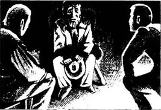
我刚从东印度群岛回来。在那里逗留期间我去了婆罗洲岛。在岛上我发现并抓住了这只猩猩。它非常的粗野危险，所以回国的途中我费尽周折。不过总算回到了法国，我把它带到我在巴黎的房子里。因为怕邻居知道，我只好把它藏起来，打算尽快把它卖掉赚上一大笔钱。
6月3号晚上我外出和朋友聚会，很晚才回家。到家后，发现那只猩猩竟然站在我的卧室里，手里还拿着我的剃刀。通往它房间的门被砸成了碎片。我一下子手足无措起来。这种动物在赤手空拳的时候都很危险，何况它现在还拿着剃刀……！在乘船返回的路上我总是用一根鞭子让它保持安静，于是我就去找那根鞭子。但是这只猩猩一看到鞭子，就跑出房间，跑下楼梯，从一扇开着的窗户跳到了街上。
我害怕极了。怎么才能抓到它呢？它在前面跑，我就在后面追。有时候它停住脚，看看我，手里依然拿着那把剃刀。可我一靠近，它就又跑起来。我们就这样你追我赶地跑着。幸好当时街上寂静无人，因为那时已经是将近凌晨3点了。
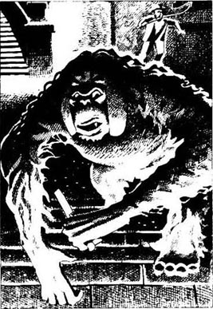
后来，我们跑到了莫尔格街后面的一条狭窄的小巷，那家伙看到了五楼一扇窗户透出来的灯光。我还没来得及阻止，它就看见了那根避雷针，飞快地爬了上去，抓住格状的窗板，从开着的窗户荡进了房间。干完这一切它只用了不到一分钟。窗板随后又被弹了回来，紧贴着墙壁。
我想我终于可以抓到它了。可当时我也非常担心。这家伙在上面的房间里干什么呢？我决定立刻跟着它顺避雷针爬上去。爬到五楼后，我发现自己不可能从窗户进去。我只能从这儿往屋里瞧了——就在这个时候，传来一声非常凄厉的尖叫。老天爷作证，我今生今世都忘不了那晚看到的可怕的一幕。
那只猩猩一只手抓住了埃斯巴耐夫人的头发，另一只手里依旧拿着那把剃刀。老夫人的女儿立刻就昏倒了，一动不动地躺在地板上，脸色苍白。老太太努力想挣脱，却被那猩猩拽掉了几撮头发。她边挣扎边尖叫，或许这激怒了猩猩。于是猩猩就用那把剃刀把她的头几乎割了下来了。鲜血四溅！血让那家伙更加愤怒了。它跑到那女孩儿的身边，用它那双可怕的手紧紧地卡住了她的脖子。把她掐死后，那家伙抬起头——透过窗户看到了我的脸。我冲它嚷，它也大叫着回敬我。后来它可能记起了我的鞭子，或许这就是它为什么想把尸体藏起来的原因。见则有，不见则无吧。我不知道。它先是在房间里跑来跑去，弄坏了全部桌椅，把床垫也拽了下来。然后它抓起女孩的尸体竖着塞进了烟囱。最后，它又抓起老太太的尸体拖到窗口，扔了下去。
这真是惨不忍睹。我几乎是从避雷针上掉下来的，赶紧跑回家了。我只想摆脱那份恐惧。
□ □ □
这就是发生在莫尔格街凶杀案背后的故事。就在邻居们撞开房门之前，那只猩猩从窗户逃了出去，窗户随之关上了。
后来水手抓住了那只猩猩，卖了一大笔钱。我们把这一切告诉了那个巡官，当天下午阿道夫·勒邦走出了监狱，是个自由人了。巡官对这一切并不是很满意。他滔滔不绝地讲了很多，什么有些人总想当警察，却从不了解这份工作啦什么的。
“我们不和他争论，”一起回家的路上杜邦对我说，“让他说去吧。他就是那样，不过人还是不错的。我发现了谜底，他却没有。其实就是这些。”
ACTIVITIES: Before Reading
ACTIVITIES
Before Reading
1．Read the introduction of the book. How much do you know now about the story? Correct the mistakes in this passage.
The old lady and her son were murdered on the second floor of a house in the Rue Morgue in London. The door was open, with the key on the outside of the door, and the windows were shut but not fastened. Two laughing voices were heard by friends when they ran up the stairs.
2．Can you guess what happens in this story? Choose endings for these sentences.
1) The murderer escaped...
(a) from the roof.
(b) through a window.
(c) through the door.
(d) down a secret stair.
2) People thought the two angry voices spoke in...
(a) French.
(b) Russian.
(c) English.
(d) French and another language.
3) The police arrested...
(a) a Russian sailor.
(b) one of the neighbours.
(c) a bank clerk.
(d) the daughter's lover.
4) The police arrested...
(a) the right person.
(b) the wrong person.
ACTIVITIES: While Reading
ACTIVITIES
While Reading
1．Read Chapter 1. How did Auguste Dupin work out what his friend was thinking? Put these notes in the right order (from 1 to 8), to show how his thinking went.
□ thinking of Racine's play
□ Chantilly 'the new Racine'
□ nearly falling over
□ jumping out of the way
□ meeting the apple-seller
□ turning into the Rue Racine
□ looking at the street name
□ hole in the street
2．Read Chapters 2 and 3. How much do we know now about the mystery? Which of these things are we sure about, and which are only guesses? Explain why you think this.
1) Madame L'Espanaye and her daughter lived very quietly.
2) They had no friends, and no enemies.
3) The razor was used to kill the mother.
4) The neighbours heard two voices, arguing loudly.
5) The deep voice was a man's voice, and spoke in French.
6) The shrill voice was the voice of a woman.
7) The shrill voice spoke in Italian.
8) The shrill voice spoke in Russian.
9) The murderer was very strong.
10) The murderer forgot to take the gold when he left.
11) The murderer was not interested in the gold.
3．Before you read Chapter 4, can you guess what Auguste Dupin will do next? Choose some of these ideas.
Auguste Dupin will...
1) talk to all the witnesses again.
2) ask some clever questions.
3) visit all the neighbours' houses.
4) look for a heavy piece of wood.
5) visit the Rue Morgue and look carefully at the room.
6) tell the police the murderer's name.
4．Read Chapters 4 and 5, and join these halves of sentences.
1) The police arrested Adolphe Le Bon...
2) Dupin was waiting for a visitor...
3) The witnesses agreed about the deep voice, ...
4) The witnesses all thought that the shrill voice was the voice of a foreigner, ...
5) The windows were fastened with nails on the in side, ...
6) An agile person could climb up the lightning-rod...
7) but they did not agree which language it spoke.
8) which they said was the voice of a Frenchman.
9) probably because they thought he wanted to steal the four thousand francs.
10) and swing into the room through the open window.
11) who knew something about the murders.
12) but the nail in the right window was broken.
5．Before you read Chapter 6, how much can you guess about the mystery? Think about these questions.
1) Is Dupin right about the window and the lightning-rod?
Is there another way of escaping from the room?
2) The narrator isn't sure that he understands. What is Dupin trying to tell him?
6．Read Chapter 6. How did these things help Dupin to find the answer? Explain what he was thinking for each thing.
1) the four thousand francs in gold
2) the handfuls of long grey hair
3) the peculiar voice
4) the short, orangey-brown hair
5) the old, dirty dark-red ribbon
6) the Bois de Boulogne
7．Before you read Chapter 7, can you guess how the story ends? Choose as many answers as you like.
1) The sailor ...
(a) tries to run away.
(b) tells Dupin the true story.
(c) is sent to prison.
(d) is the real murderer.
2) The orang-outang ...
(a) is never found.
(b) kills two more people.
(c) is shot and killed.
(d) is sold for a lot of money.
ACTIVITIES: After Reading
ACTIVITIES
After Reading
1．What did Dupin say to the police inspector at the end? Put their conversation in the right order, and write in the speakers' names. Dupin speaks first (number 3).
1) ______ 'But I know how to think. I know what questions to ask. And you'll find my answer is right.'
2) ______ 'A WHAT?'
3) ______ 'I have come to tell you, Inspector, the answer to the Rue Morgue mystery.'
4) ______ 'Oh, will I? What makes you so sure?'
5) ______ 'An orang-outang. It escaped from its owner's house with a razor, and climbed into the room through the window.'
6) ______ 'But we already know the answer, Dupin. The bank clerk murdered the women for the money.'
7) ______ 'Because I have a witness—who was outside the window on the lightning-rod, and who saw it all.'
8) ______ 'An orang-outang with a razor? Listen, Dupin, don't try to do my job for me. You don't know anything about police work.'
9) ______ 'No, he didn't. Adolphe Le Bon is an innocent man. The killer was an orang-outang from Borneo.'
2．Here is a new illustration for the story. Find the best place in the story to put the picture, and answer these questions.
The picture goes on in Chapter ______.
1) Where is the sailor?
2) Why is he shouting?
3) What does he do next, and why?
Now write a caption for the illustration.
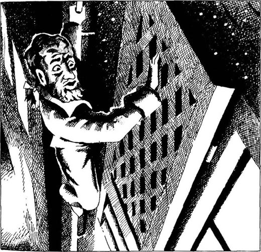
Caption: _____________________________
3．Here are some more newspaper stories from the Gazette. Use the words below to complete the stories. (Use each word once.)
agile, arrested, bank, belongs, caught,dropped, escaped, feel, free, hands, horrible, how, hurt, into, motive, out of, outside, same, sell, shutter, thousand, through, up, which, who
STORY ONE
Adolphe Le Bon, ______ works for Mignaud & Son as a ______ clerk, today left prison, a ______ man. The police ______ him because they thought that the ______ for the murders was the four______ francs in gold, ______ Le Bon carried to the house for Madame L'Espanaye. 'But it was all a ______ mistake,' said a friend of Le Bon's. 'Adolphe couldn't ______ a fly.'
STORY TWO
The police now know ______ the murderer got ______ and ______ the room in the house in the Rue Morgue. He climbed ______ the lightning-rod on the wall ______, and took hold of the open ______ with both ______. Then he pushed his ______ against the wall and swung himself into the room ______ the open window. He went out the ______ way, and the window ______ down behind him.
STORY THREE
Early this morning an orang-outang was ______ in the Bois de Boulogne. The animal, which comes from Borneo, ______ to a sailor and ______ from his house four days ago. It is a large animal, and is strong, ______, and very dangerous. The sailor is planning to ______ it as soon as he can.
4．Now write a fourth story for the newspaper, saying what really happened. You could begin like this:
At last we have the answer to the brutal Rue Morgue murders. The two women were killed by ...
5．Here are some headlines for the newspaper stories. Choose the best headline for each of the four stories.
ASTONISHING ANSWER TO RUE MORGUE TRAGEDY
POLICE ARRESTED INNOCENT MAN
WILD ANIMAL FOUND IN CITY PARK
KEEP YOUR SHUTTERS CLOSED AT NIGHT!
6．After the fourth story, some people wrote letters to the newspapers. Do you agree with any of them? Explain why.
1) 'Why is this animal still alive? It killed two innocent women. Someone must shoot it at once!'
2) 'The sailor must go to prison. The animal belonged to him and he let it escape. He must not make any money from selling it.'
3) 'It is wrong to bring a wild animal to a city. The orang-outang's home is in Borneo and it must go back there.'
封底
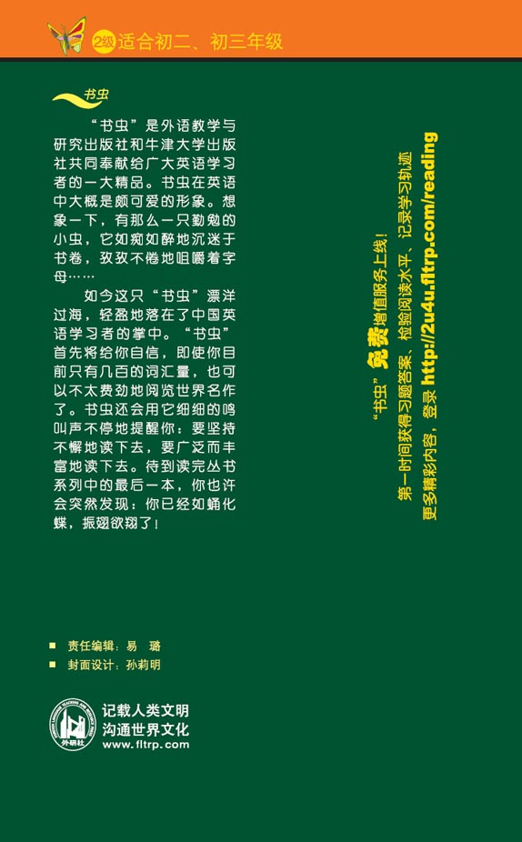